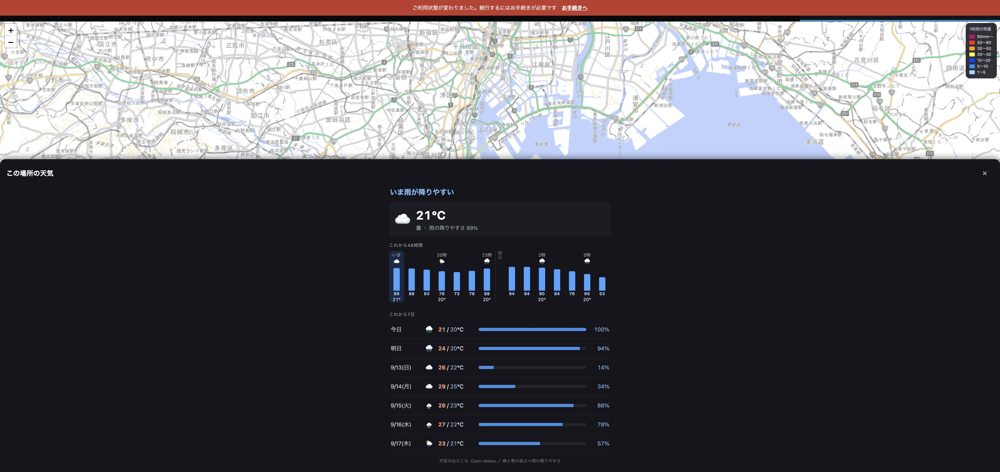

読まずに見て分かる形にしました
48行の文字を、山のかたちに変えました。
何が見にくかったか
棒の高さ＝雨の降りやすさ。高いほど降ります
実際の画面

いちばん上の一言 → 時間ごとの山 → これから7日
いちばん上の一言が答えです。「いま雨が降りやすい」「20時ごろから雨が降りやすい」「しばらく雨は降りにくい」のどれかが出ます。グラフはその裏づけとして見てください。
直したところ
7日のほうにも帯を付けて、雨の多い日がひと目で分かるようにしました
まとめ
- 先頭の一言だけ読めば足ります。
- 時間ごとは山のかたち。横に指で送ると48時間先まで。
- 7日のほうも帯で雨の多い日が分かります。
- テスト1203件すべて通っています。
いま dev です。これで読みやすければ「本番へ」と言ってください。